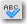

Adding Spell Check to a Field
1 Overview
Spell checking can be added to any journal field in ServiceNow, such as a Comments box. Spell checking can be added to any input field, but is not typically done for single line input fields. To enable the spell checking dictionary, install the appropriate language plugin. Localization plugins have the form I18: <Language> Translations (for example I18: German Translations).
| |
Note:
|
2 Adding Spell Checking to a Field
To add a spell check option to any field:
- Navigate to System Definition > Dictionary.
- Sort the list by journal type fields and select a field to spell check.
- An example is the comments field in the task table. This applies spell checking in the specified language to the multi-line Comments text box for incidents, problems, and changes.
-
- Click the table name to open the Dictionary form.
- Configure the Dictionary form and add the Spell check check box.
- Select the check box to enable spell checking in every Comments field on the Task table.
- To use the spell checker in a task record, click the spell check icon  next to the field label. The spell checker highlights the misspelled words.
{kind=link}
{kind=link}
{kind=link}
{kind=link}
3 Dictionaries
Install the appropriate dictionary plugins (I18: <Language> Translations plugins) for all desired languages, and then navigate to System Properties > System Localization to configure the installed dictionaries. Select the dictionary to use for the localized ServiceNow instance. Language version such as English (US English), English UK, and Brazilian Portuguese are available.
{kind=link}
The dictionaries available for spell checking include:
- English US
- English UK
- German
- French
- Italian
- Spanish
- Dutch
- Russian
- Thai
- Portuguese
- Brazilian Portuguese
Contents > Administer > Core Configuration > Form Administration
Contents > Administer > Managing Data > Field Administration